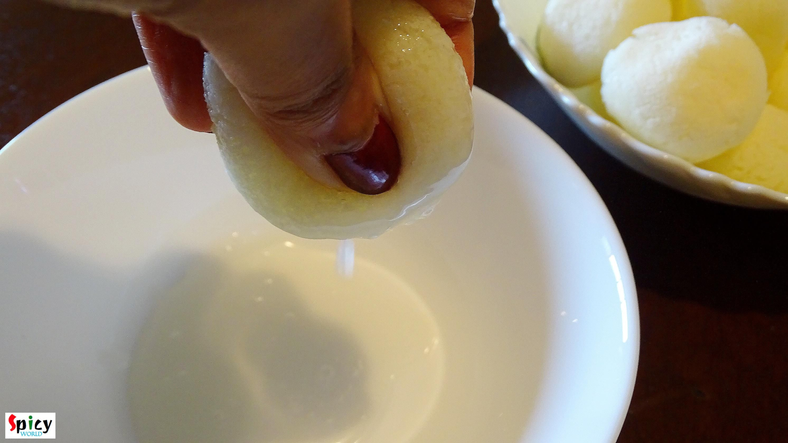
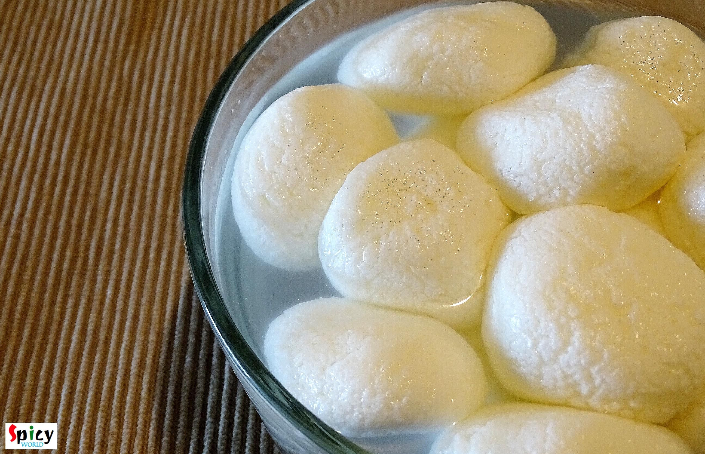
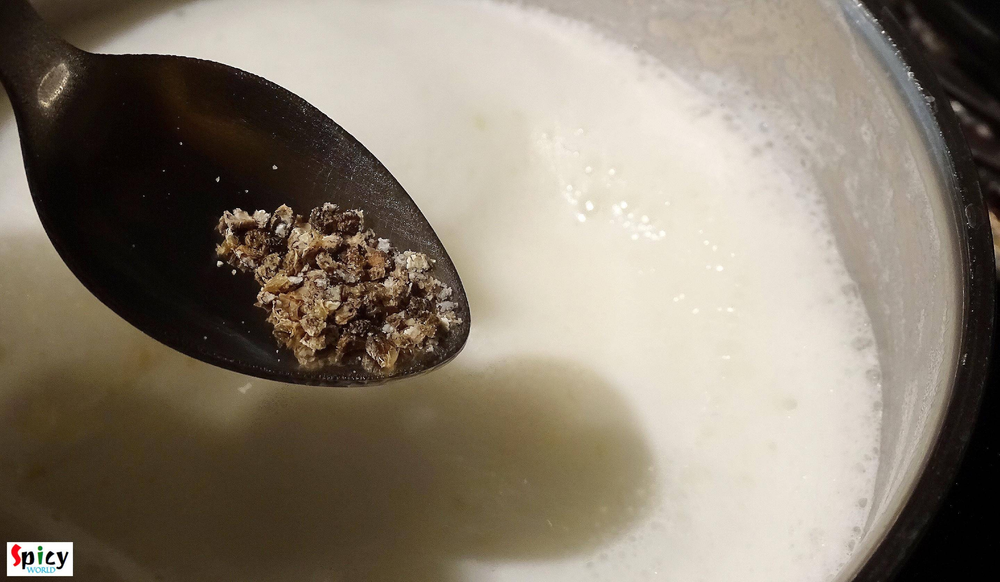
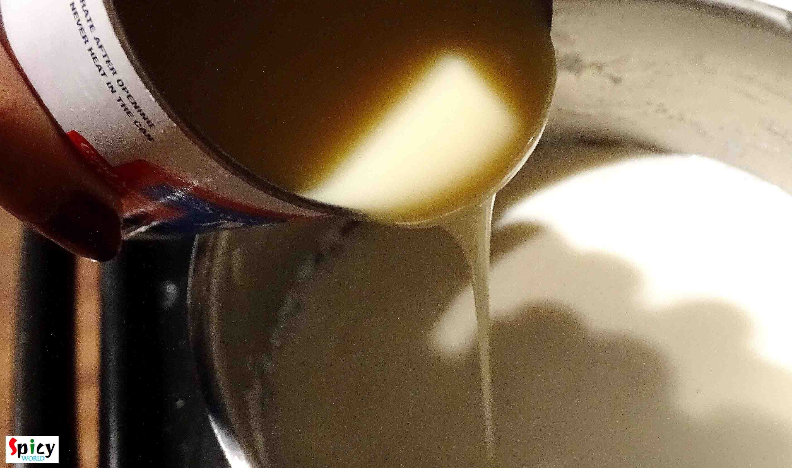
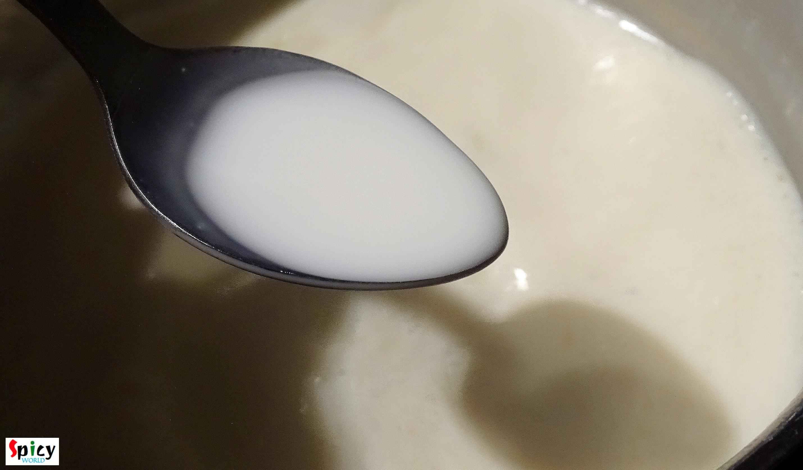
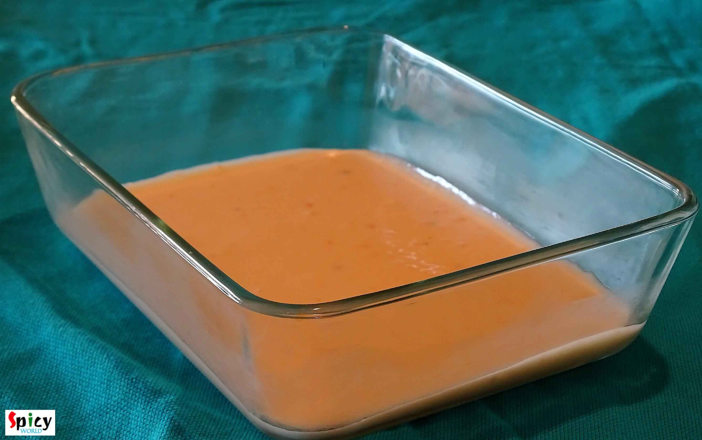
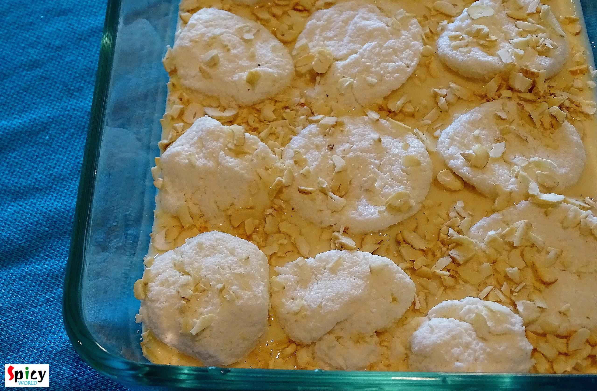
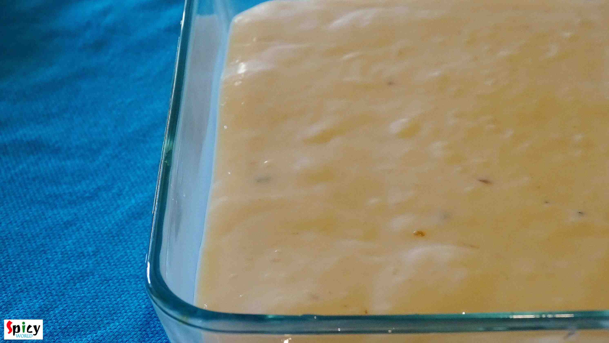
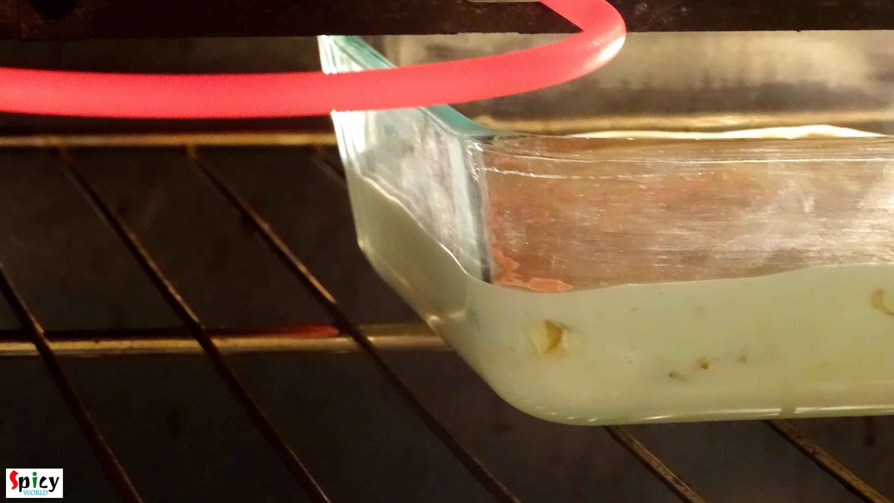
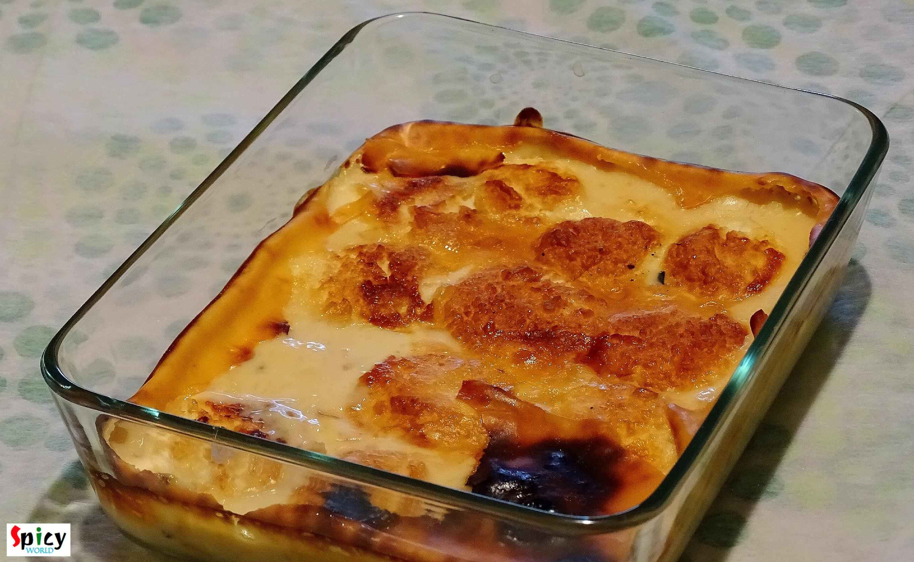

Baked Rosogolla

'Diwali' is the celebration of light and sound. Its been two years I am away from home (Kolkata). My papa used to buy me lots of crackers a day before diwali, we toast them in sunlight and in the evening of diwali my (maternal) uncle bought me some more crackers for his 'vagni'. Then around 8 pm me and my papa used to decorate our roof with candles and after that we started doing fireworks with our family. Ohh, I almost forgot to tell you about food. My mom used to make various types of sweets at home and we enjoyed them a lot. So, I made 'baked rosogolla' for this diwali, my first attempt and I nailed it. Try this in your kitchen and share some of your diwali story with me.
Spicy World wishes everyone a very Happy DiWaLi ...

Ingredients
- 15 rosogollas.
- 7 cups of milk.
- ½ tin of condensed milk.
- Pinch of cardamom powder.
- 1 Teaspoon cornstrach.
- 4 Teaspoons of chopped cashews.
- Water.

Steps










- Enjoy them on this kind of special occasion ...
")